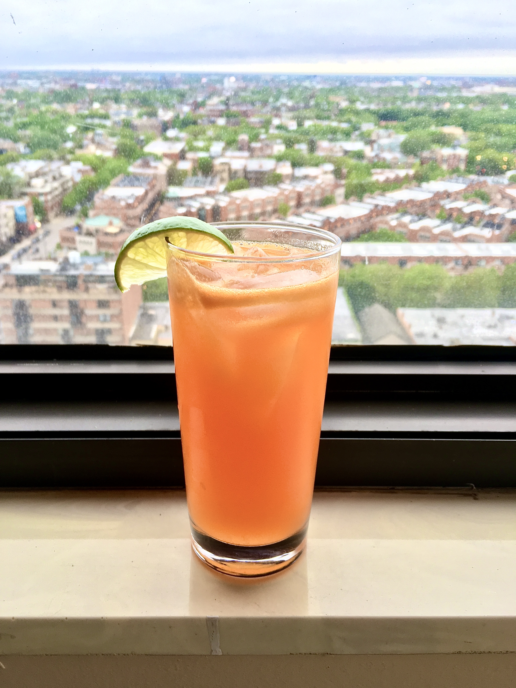

Bitter Mango Fizz

Recipe
My attempt at recreating one of my favorite cocktails from El Che Bar in Chicago.
Ingredients
- 1.5 ounce gin
- 1 ounce Campari
- 0.5 ounce fresh squeezed lime juice
- 1 ounce mango puree
- 1 dash salt tincture (see below)
- Ginger beer, to top
- Rosemary sprig, to garnish
Preparation
- Combine gin, campari, lime juice, mango puree, and salt tincture in a cocktail shaker with ice and shake.
- Strain into a high ball glass filled with ice.
- Top with ginger beer and garnish with a rosemary sprig.
Salt Tincture
- Dissolve 1 part salt to 4 parts water to create the salt tincture